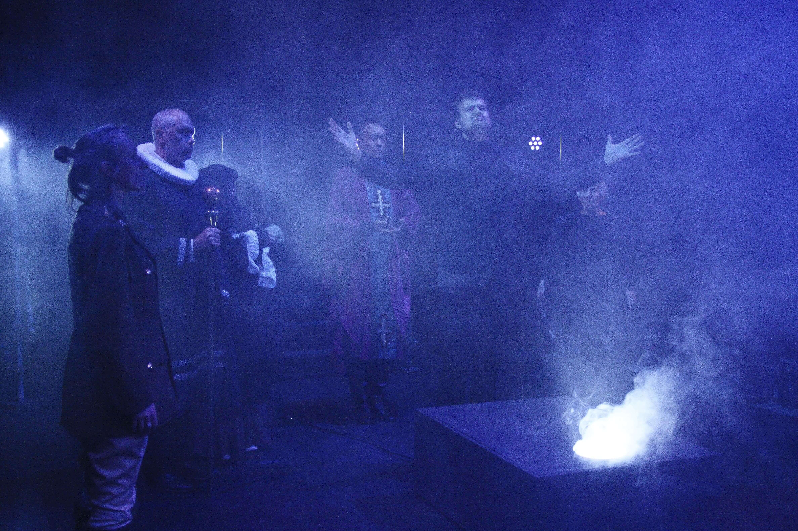
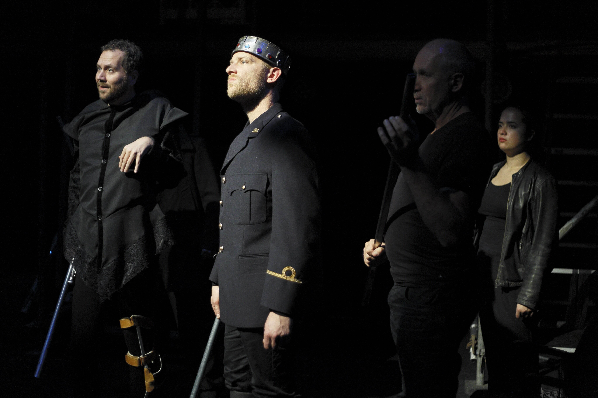
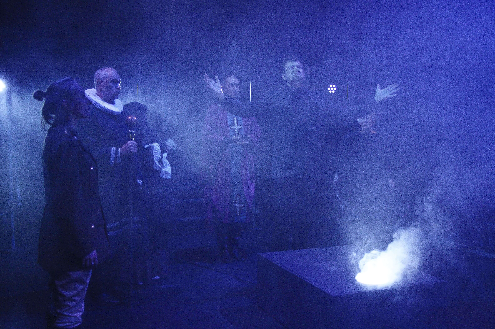
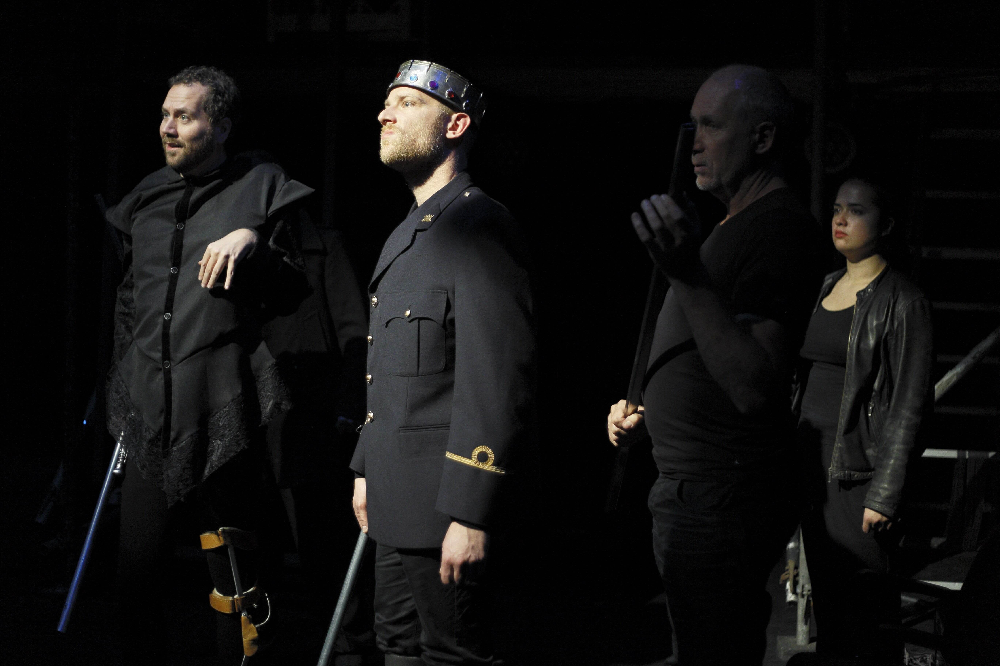

Wil je lid worden van Toneelgroep Imperium? Heb je zin om te spelen, of om achter de schermen te werken?
Onze vereniging kan altijd enthousiaste en hard werkende theatermakers gebruiken. Theatermakers, ja,
want bij Imperium komt méér kijken dan alleen toneelspelen.
Voor onze producties op de planken staan zijn veel leden actief met het uitzoeken van stukken,
aantrekken van regisseurs, decor bouwen, lichtplannen maken, kleding, grime, pr, theater inrichten,
lampen ophangen, verspreiden van flyers en affiches en niet te vergeten het schoonhouden van ons eigen
theater en het draaien van bar- en kassadiensten bij voorstellingen.
Als geïnteresseerde in lidmaatschap kun je eenmalig gratis aan twee auditieavonden meedoen.
Op die avonden ontvang je aanvullende informatie over Imperium en kun je kennismaken met de werkwijze en sfeer binnen Imperium.
Na die twee avonden kun je bepalen of Imperium past bij wat je zoekt. Tevens zal de begeleider van deze avonden
aangeven of op grond van jouw ervaring en bijdrage aan de auditie Imperium een goede plek voor jou zou kunnen zijn of een
cursus elders wordt aangeraden. Word lid door hiernaast op de knop te drukken! Of als je het nog niet zeker weet kun je ook over
ons lezen of ons een vraag stellen!